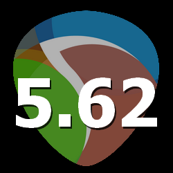

^  gfx.getchar
gfx.getcharFunctioncall:
Lua: integer charactercode = gfx.getchar(optional integer character)
Description:
If char is 0 or omitted, returns a character from the keyboard queue, or 0 if no character is available, or -1 if the graphics window is not open.
If char is specified and nonzero, that character's status will be checked, and the function will return greater than 0 if it is pressed.
Common values are standard ASCII, such as 'a', 'A', '=' and '1', but for many keys multi-byte values are used,
including 'home', 'up', 'down', 'left', 'right', 'f1'.. 'f12', 'pgup', 'pgdn', 'ins', and 'del'.
Modified and special keys can also be returned, including:
- Ctrl/Cmd+A..Ctrl+Z as 1..26
- Ctrl/Cmd+Alt+A..Z as 257..282
- Alt+A..Z as 'A'+256..'Z'+256
- 27 for ESC
- 13 for Enter
- ' ' for space
-
- use 65536 as parameter charactercode to query special flags, returns: &1 (supported in this script), &2=window has focus, &4=window is visible
Some multibyte-characters, like home, up, down, left, right, f1 .. f12, pgup, pgdn, ins, del are returned as values above 255, but some other characters, like €,
are "real"-multibyte-characters, stored as multiple 8-bit-values after each other.
To retrieve them, you need to run gfx.getchar() twice per defer-cycle and return their retvals into two variables:
Example:
A=gfx.getchar() -- first byte
B=gfx.getchar() -- second byte
if A==261 and B==128 then reaper.MB("You typed the €-symbol.", "Message", 0) end -- typed character is the Euro-currency-symbol:
| Parameters: |
| optional integer character | - | the character to check for; use 65536 to check window-state(visible, focus)
&1 (supported in this script), &2=window has focus, &4=window is visible |
| Returnvalues: |
| integer charactercode | - | either the charactercode or 0 if nothing is pressed
-1, if the gfx.init-window is closed
When the parameter character is given and not 0, charactercode is either
0, nothing is pressed, or
>0, the character you want to check for is pressed. |
^  OscLocalMessageToHostFunctioncall:
C: void OscLocalMessageToHost(const char* message, const double* valueInOptional)
EEL: OscLocalMessageToHost("message", optional valueIn)
Lua: reaper.OscLocalMessageToHost(string message, optional number valueIn)
Python: RPR_OscLocalMessageToHost(String message, const double valueInOptional)
Description:
Send an OSC message directly to REAPER. The value argument may be NULL. The message will be matched against the default OSC patterns. Only supported if control surface support was enabled when installing REAPER.
| Parameters: |
| string message | - | |